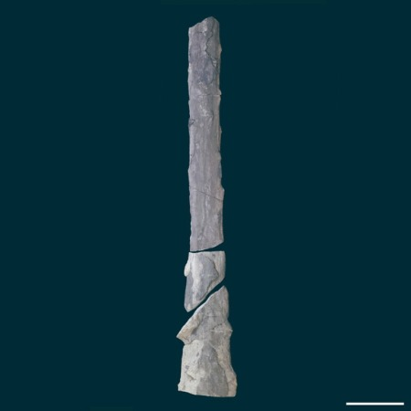
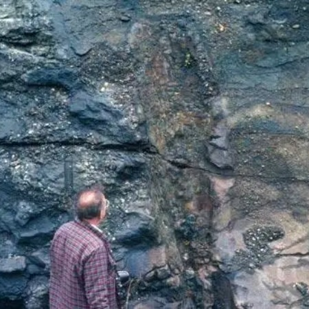
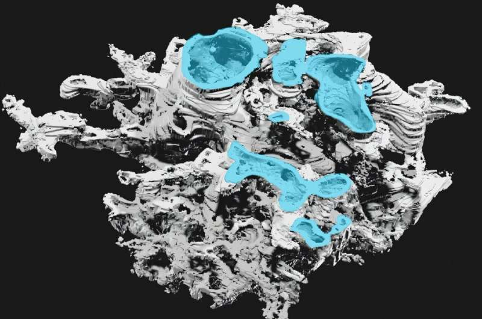

Prototaxites Fossil Discoveries
By Emery Grey

Background
Since the discovery of Prototaxites loganii by W.E. Logan in the Gaspé Peninsula in 1843, the exact category to put this species in has been heavily debated. At first it J. W. Dawson labled it as a rotted out trunk of a coniferous tree (Dawson, 1859). Later, W.M. Carruthers argued that it could not possibly be a tree. It had to be either a lichen, a fungi, or an algae (Carruthers, 1872). This began a century and a half of debating what exactly this misterious fossil could have been.
On January 21, 2026, an article was published providing evidnece that the structural and chemical differences that Prototaxites have that has sparked so much debate about what exactly it is is enough to identify it as it's own Kingdom (Lorin et al, 2026). Now that Prototaxites is no longer being forced into a prexisting box, scientists can learn more about what exactly it was, how it survived on land, and potentially learn more about early terrestrial ecosystems and evolution.


What We Know
Prototaxites fossils have been found primarily on formations created during the Late Silurian stage and through out the Devonian Period, which was when small flora and smaller invertabrates were just starting to move onto land. Prototaxites would have stood out on this landscape due to their unusually massive size. They were tall and cylindrical, standing up to 8 meters (26 feet) tall (Lorin et al, 2026), and about a meter (3 feet) in diameter (Huber).
What has confused scientists about how exactly to categorize Prototaxites is it's intricate structure of tubes. Dawson, the first to study Prototaxites fossils in Gaspé Bay, described them as "like mycelium of fungus" (Huber). It has been heavily debated whether these cells most resemble wood, algae, lichen, or fungus cells(Huber). This debate was put to rest when scientists were able to study the chemical composition of fossils. The carbon isotopes that are present in Prototaxites fossils (δ13C values) are incosnistant with what is typically found in fossils that rely on photosynthesis. This has led to debate about a potential symbiotic relationship that allowed Prototaxites to obtain energy and neutrients, but there has been no other organism discovered. This implies that Prototaxites were consumers which aligns it with the hypothesis that they were fungi. However, according to a study from January of 2026, there are no traces of chitin and β-glucan that is consistant with the fossils of consumers like fungi (Lorin et al, 2026). They suggest that this means that it was not a fungus or anything similar to modern organisms. Instead, it is it's own Kingdom.


Mapping the Locations of Prototaxites Fossils
Knowing that Prototaxites were most likely their own thing, understanding where they have been discovered can help us understand how various factors of the Devonian and Silurian period impacted Prototaxites evolution and extinction. However, when I looked into Prototaxites, I noticed that there was no readily available spatial data. I was able to go through several databases, studies, and journal articles in order to map out the locations of 88 Prototaxites fossil discoveries from North America, Europe, and Northern Africa, and document their species, geological age, and the geology, paleo environment, and paleoclimate of the formation they were found in. Most of what I was able to find did not have the exact location of these discoveries which means that these are rough estimates of where these fossils may have been found as opposed to exact discovery locations.